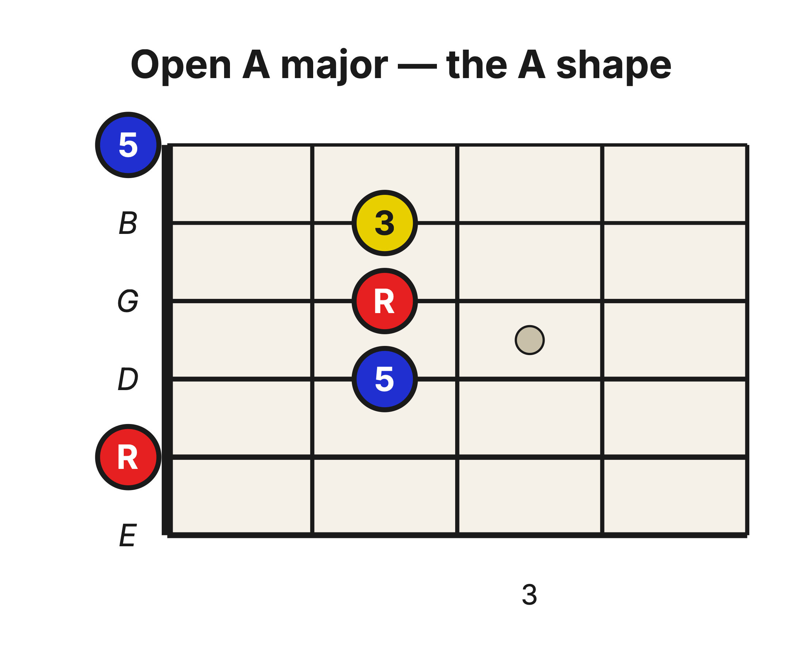
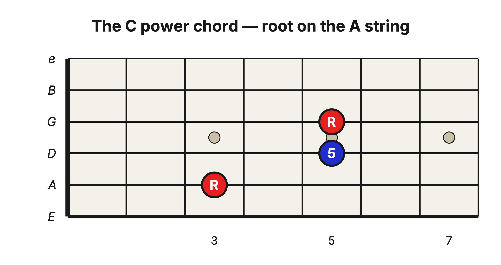
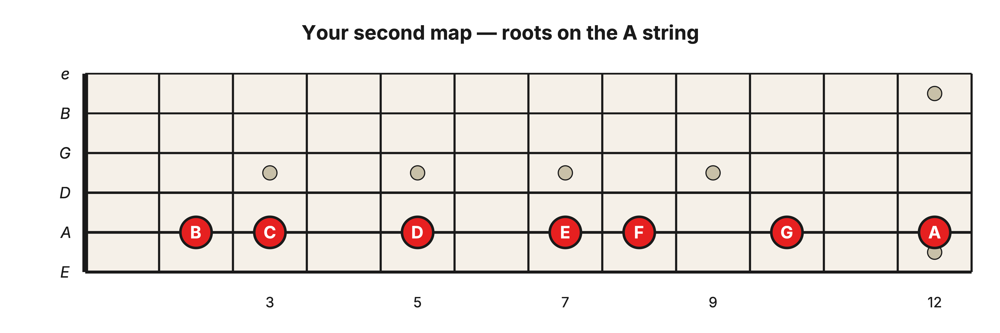
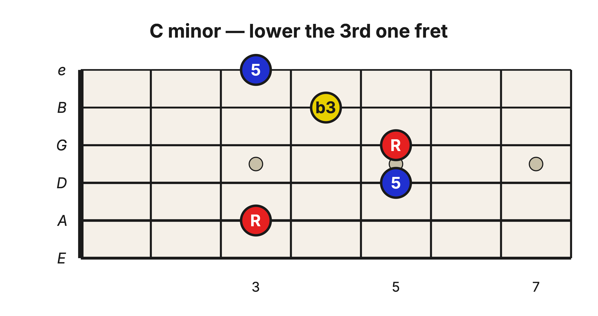
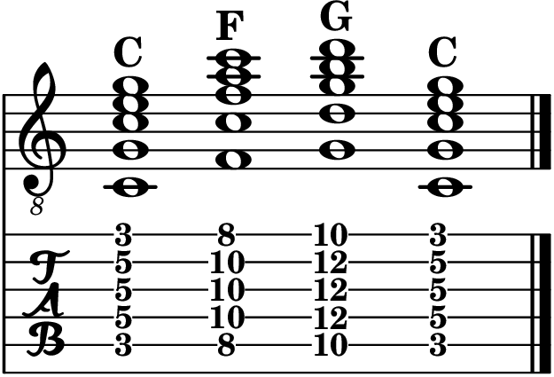

Level 2 · Chapter 16
The Fretboard: Your Second Movable Chord (The A-Shape Barre)
You own one movable chord. Find a root on the low E string, lay the E shape behind it, and you have a Major chord anywhere on the neck; lower one finger and it turns minor. That chord came from two Level 1 skills, the notes on the low E string and the power chord, plus one new note: the 3rd.
But the low E string is not the only string you memorized in Level 1. The A string is sitting right there, learned and ready, and it wants to be a map too. It just needs its own shape. The guitar already gave you one.
The seed: open A Major
The E shape grew out of the open E Major chord. Your second shape grows out of the open A Major chord, the one with three fingers standing in a row on the 2nd fret.

The same three workers as before: the root (red), the 3rd (yellow), and the 5th (blue). Now look at the three lowest strings in the chord, the A, D, and G strings. Root, 5th, root. That is the A-string power chord from Level 1, hiding inside the A shape exactly the way the E-string power chord hid inside the E shape.
One housekeeping note: the low E string sits this chord out. The chord starts on the A string, so strum from the A string down and let the root be the lowest note you play.
Three notes in a straight line
Something is different here, though. In the E shape, the 3rd sat one fret behind the root and 5th beside it. In the A shape, the 5th, the root, and the 3rd stand shoulder to shoulder, a straight line of three notes across the 2nd fret.
You already know why. The 3rd of this chord lands on the B string, and reaching the B string means crossing the one odd pair in standard tuning: G up to B is a Major 3rd, not a Perfect 4th, so every note on the B string sits one fret higher than the pattern of the other strings would predict. The quirk that bent your 3rd shapes on the treble strings is the same quirk that pushes this 3rd forward, right into line with the root and 5th. One tuning fact keeps explaining shape after shape.
Make the shape movable
First, remind yourself what you already own at the 3rd fret of the A string.

Root, 5th, root: C, G, C. Now do what you did last time. Lay your first finger across the strings at the 3rd fret to take over the nut's job, and stand the three-in-a-line notes two frets up. You can give them one finger each or lay your ring finger flat across all three; both are common.

The note under the barre on the A string is C, so this chord is C Major. And the bottom three sounding strings are still that C power chord. The straight line simply added the 3rd on the B string, with one more 5th ringing on top. The power chord, filled in. Again.
The A string is your second map
Because you memorized the A string in Level 1, you already know where every one of these chords lives.

B at the 2nd fret, C at the 3rd, D at the 5th, E at the 7th, F at the 8th, G at the 10th. Find the root, lay the shape, and the chord takes the root's name. Same routine as the low E string, one string higher.
Notice what this does to the neck. C Major used to live at the 8th fret, as an E shape. Now it also lives at the 3rd fret, as an A shape. Same chord, two homes.
Major to minor is one finger
The 3rd sits on the B string, and just like in the E shape, it is the only note with an opinion about Major versus minor. Lower it one fret (lift it so the string falls back onto the barre is not an option here, so slide that one finger back) and the chord darkens.

One note moved, and C Major became C minor. The roots and the 5ths never flinched. Bright to dark in a single fret, exactly as before, only now the deciding note lives on the B string.
Now play something
Remember the primary triads, C, F, and G? You played them as compact three-string triads with their roots on the A string: C at the 3rd fret, F at the 8th, G at the 10th. Those same three roots now carry full five-string chords. Barre, build, strum.

Same grip every time. You are reading the A string to name each chord, exactly the way you read the low E string last time.
Hear it
Two things to listen for:
- Major to minor: strum C Major at the 3rd fret, then pull the 3rd back one fret and strum C minor. Go back and forth slowly. The entire change of mood is one note moving one half step.
- Two shapes, one chord: play G as an E-shape barre at the 3rd fret, then G as an A-shape barre at the 10th. Same name, same three notes doing the work, two different neighborhoods of the neck.
Try it yourself
Slide the A shape until the root under the barre sits at the 5th fret of the A string. Which Major chord are you playing? Name its three notes, then check below.
Answer key
D Major: D, F♯, A. The root D is on the A string at the 5th fret (and again on the G string at the 7th), the 3rd (F♯) is on the B string at the 7th fret, and the 5th (A) rings on the D string at the 7th fret and on the high e string at the 5th.
Take stock again. Two memorized strings, two movable shapes, and every Major and minor chord on the neck now has at least two homes. The ingredients never changed: a root, a 5th, and the one 3rd that decides the mood.